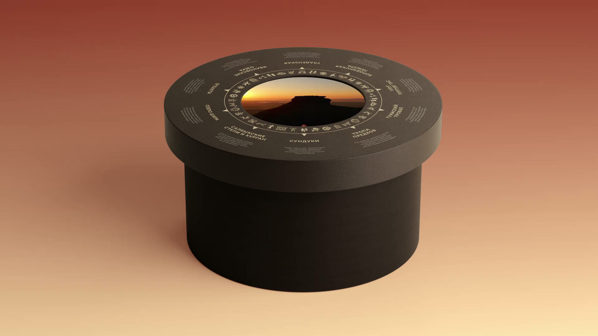

Достопримечательности Хакасии
Стенд Хакасии · выставка «Россия» · 2023
Круглый стол с экраном и поворотной столешницей, на которой расположены названия достопримечательностей Хакасии. Посетитель поворачивает столешницу и совмещает метку выбранного места с указателем на экране. На экране появляются карта с расположением достопримечательности и короткий видеоролик о ней.